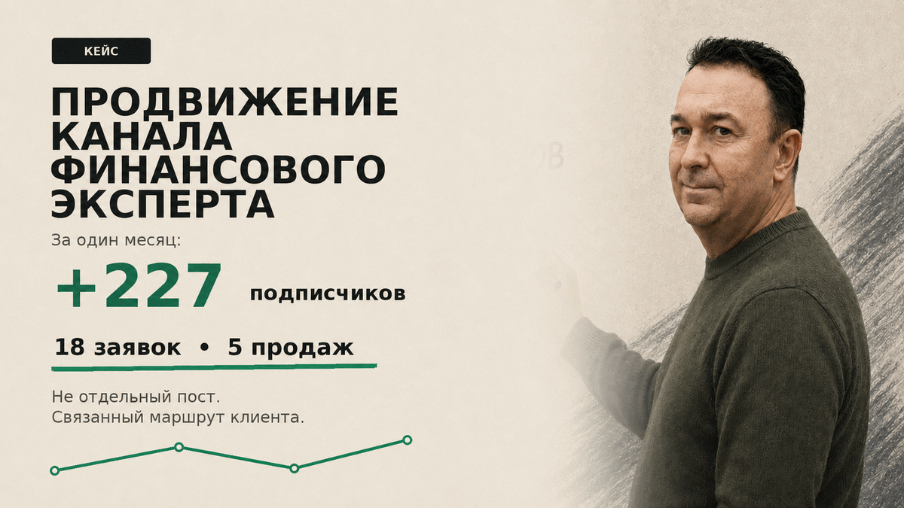

подписчиков за период продвижения
КЕЙС 02 / TELEGRAM
Канал финансового эксперта: 450 000 ₽ выручки
Продвижение не ограничили закупкой подписчиков. Связали входящий трафик, контент, доверие и понятный переход к обращению.

18 заявок, 5 продаж
по внутренним данным клиента
Где был разрыв
Рост аудитории сам по себе не превращался в обращения. Новому подписчику требовалось быстро понять ценность эксперта, увидеть доказательства и получить ясный повод написать.
Что изменили
Собрали маршрут от рекламного сообщения до продажи: уточнили упаковку канала, усилили связку публикаций и оффера, добавили точки перехода к диалогу.
Что получили
Аудитория выросла с 751 до 978 подписчиков. Продвижение принесло 18 заявок, из которых 5 завершились продажей на общую сумму 450 000 ₽.